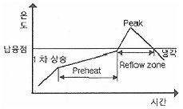
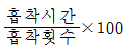
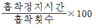
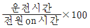
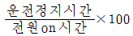
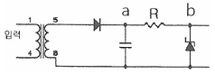
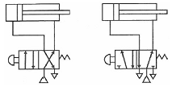

전자부품장착기능사 (2015-07-19 기출문제)
1과목: SMT 개론
1. 실장기(Mounter)의 노즐(Nozzle)에 관한 설명으로 틀린 것은?
- 헤드(Head) 끝 부분에 장착되어 있다.
- 부품의 종류에 맞도록 선택하여 사용된다.
- 부품을 피더(Feeder)에서 흡착하여 기판에 탑재한다.
- 미소 칩(Chip)은 집게(Gripper)로 된 노즐을 사용한다.
(정답률: 71%)

2. 일반적인 SMT LINE을 구성한 것으로 옳은 것은?
- 로더 → 스크린 프린트 → 이형 칩 마운트 → 표준 칩 마운트 → 리플로우 → 언로더
- 로더 → 스크린 프린트 → 표준 칩 마운트 → 이형 칩 마운트 → 리플로우 → 언로더
- 로더 → 스크린 프린트 → 표준 칩 마운트 → 리플로우 → 이형 칩 마운트 → 언로더
- 로더 → 표준 칩 마운트 → 스크린 프린트 → 이형 칩 마운트 → 리플로우 → 언로더
(정답률: 86%)
3. 실장기술에서 실장부품의 발전방향으로 틀린 것은?
- 복합 부품화
- 소형화, 미소화
- Lead 이형 부품화
- IC Lead 의 fine pitch화
(정답률: 82%)
4. 다음 중 리플로우 온도 프로파일에 영향을 미치는 요소 및 설명으로 틀린 것은?
- 선 공정 구성장비 : 리플로우 전의 구성장비 종류
- 리플로우 내의 배기 풍속 : 배기풍속의 빠르고 느림
- 기판의 종류 : 재질, 크기 두께에 따라 열용량을 다르게 받음
- 탑재 부품 및 실장 밀도 : 탑재부품의 크고 작음, 실장밀도의 높고 낮음
(정답률: 71%)
5. 일반적인 메탈마스크의 스텐실 두께로 옳은 것은?
- 0.⑤~0.1 mm
- 0.12~0.2 mm
- 0.25~0.33 mm
- 0.4~0.48 mm
(정답률: 71%)
6. 스크린 프린터(Screen printer)의 설명 중 틀린것은?
- 스크린 프린터에서 backup pin은 필요가 없다.
- 스크린 프린터의 종류에는 전자동, 반자동, 수동이 있다.
- 스퀴지(Squeeze)로 일정한 압력을 가하면서 크림솔더를 이동시킨다.
- 납(Solder mask), 칩 Bond 등 스크린 마스크(Screen mask)를 이용하여 프린트 한다.
(정답률: 80%)
7. 아래 온도 프로파일에 대한 설명 중 틀린 것은?

- 1차 상승은 휘발 성분을 없앤다.
- Preheat 구간은 일정한 온도 (150℃ 전후)를 유지하며, Flux를 활성화시킨다.
- 접합강도를 높이기 위해서는 빠른(급격) 냉각보다는 늦은(완만) 냉각이 유리하다.
- Peak 온도는 부품이 사양을 고려하여 설정하되 일반적으로 210~220℃ [무연 납 : 230~250℃] 이내에서 설정한다.
(정답률: 80%)
8. IC 사용 및 보관 방법 중 틀린 것은?
- 보관소는 접지를 사용한다.
- 습도를 60~100%로 유지한다.
- 포장 개봉 후 가급적 48시간 이내에 사용한다.
- 개봉된 IC는 드라이 (Dry)함에 보관한다.
(정답률: 84%)
9. SMT를 이용하여 생산할 경우 단점이 아닌 것은?
- 고밀도로 Total cost를 절감한다.
- 공정의 System 화로 집중적인 투자 경비가 필요하다.
- 새로운 부품의 개발 및 설비의 향상으로 변화에 대응하여야 한다.
- 부품의 소형화, IC lead 의 협소 등으로 불량 수정 및 재작업이 어렵다.
(정답률: 79%)
10. 온도프로파일 측정 주기 및 관리에 대한 설명 중 틀린 것은?
- 온도 프로파일의 측정주기는 1회/일 및 생산모델 변경 시 측정한다.
- 측정된 온도 프로파일은 표준 온도 프로파일과의 적합성을 비교한다.
- 온도 프로파일 측정용 샘플(열전쌍이 접속된 기판)은 재사용하면 안된다.
- 온도 프로파일 측정용 샘플(열전쌍이 접속된 기판)은 모델별로 관리 보관한다.
(정답률: 80%)
11. 다음 중 부품을 자동 삽입하는 공정용어는?
- loader
- radial
- reflow
- routing
(정답률: 70%)
12. 표준 칩 마운트(Chip Mounter)의 설명으로 옳은 것은?
- 표준화되지 않은 여러 가지 부품을 실장하는 장치이다.
- 표준화된 부품과 이형부품을 실장하는 다기능 장치이다.
- 표준화되지 않은 이형 type의 부품과 lead 부품을 실장하는 장치이다.
- 표준화된 부품을 실장하는 장치를 말하며 고속 마운트라고도 말한다.
(정답률: 73%)
13. 실장공정 환경 중 온도관리 조건으로 알맞은 것은?
- 10~15℃
- 15~22℃
- 22~27℃
- 27~32℃
(정답률: 79%)
14. 리플로우 가열방식 중 대류 작용을 이용한 것은?
- 열풍방식
- IR 가열방식
- 증기 가열방식
- 레이저 가열방식
(정답률: 82%)
15. 전자 부품 실장 및 납땜 후 랜드 또는 부품 주변에 납볼이 있는 불량은?
- Solder ball
- Solder 과다
- Solder 과소
- 맨하탄
(정답률: 82%)
16. 다음 중 인쇄기 항목이 아닌 것은?
- 에칭 (Etching)
- 스퀴즈 (Squeeze)
- 메탈마스크 (Metal mask)
- 석션 블록 (Suction block)
(정답률: 75%)
17. 마운터에서 발생하는 불량이 아닌 것은?
- 미장착
- 틀어짐
- 솔더 부족
- 부품 일어섬
(정답률: 72%)
18. 리플로우 공정에서 솔더볼(Solder ball) 불량과 밀접한 온도 프로파일 구간은?
- 냉각구간
- 승온구간
- 예열구간
- 용융구간
(정답률: 68%)
19. 리플로우(Reflow) 장비 사용 시 가장 중요한 공정조건으로, 솔더 조성, PCB 크기, 실장면적 등에 따라서 최적의 온도 변화 곡선을 설정하여 관리하는 것은?
- 가열 (Heating)
- 온도 프로파일 (Profile)
- 열전대 (Thermo couple)
- 리플로우 체커 (Reflow checker)
(정답률: 75%)
20. 다음 중 부품의 장착 순서가 올바르게 나열된 것은?
- 2012 커패시터 → 40mm QFP →BGA(Ball Grid Array) → 10⑤ 저항
- 10⑤ 저항 → 2012 커패시터 → 40mm QFP →BGA(Ball Grid Array)
- 40mm QFP → 10⑤ 저항 → 2012 커패시터 →BGA(Ball Grid Array)
- BGA(Ball Grid Array) → 40mm QFP → 10⑤ 저항 → 2012 커패시터
(정답률: 82%)
2과목: 전자기초
21. 다음 중 SMT의 구성장비가 아닌 것은?
- 로더
- 노광기
- 칩 마운터
- 스크린프린터
(정답률: 85%)
22. 크림솔더나 칩 본드를 인쇄하거나 도포한 기판에 각종 칩 부품을 장착하는 장비는?
- 디스펜서
- 칩 마운터
- 리플로우 경화로
- 솔더 인쇄기(스크린 프린터)
(정답률: 72%)
23. 솔더 페이스트 인쇄 작업 시 지켜야 할 사항에 대한 설명으로 틀린 것은?
- 생산해야 할 기판이 인쇄할 면과 메탈마스크가 맞는지 확인한다.
- 실내환경에 적응하도록 항상 스크린프린터 커버를 오픈시켜 놓고 작업해야 한다.
- 냉장고에서 꺼내 솔더 페이스트는 뚜껑을 개봉하지 않고 라인의 실내온도와 일치하는 시간까지 상온 방치한다.
- 주기적으로 메탈마스크 위의 납량을 확인하여 보충해주어야 하며 스퀴지 양쪽으로 밀려난 솔더 페이스트를 안쪽으로 밀어 넣는다.
(정답률: 76%)
24. SMT 부품실장 시 장착점을 보정하기 위해 PCB기판에 만든 인식표는?
- Side mark
- Clamp mark
- Pattern mark
- Fiducial mark
(정답률: 74%)
25. 생산관리에서 누적되어있는 데이터 항목의 내용 중에 가동률을 나타내는 식은?




(정답률: 78%)
26. 다음 중 리플로우 납땜 시 발생되는 불량이 아닌것은?
- 오픈
- 브리지
- 솔더크랙
- 솔더 레지스트
(정답률: 64%)
27. 외부 환경으로부터 반도체 칩을 보호하고, PCB와 전기적으로 접속, 반도체 칩에서 발생하는 열 방출, PCB에 실장하기 쉬운 형태를 제공하는 것은?
- 패키지
- 펠리클
- 리드프레임
- 본디와이어
(정답률: 77%)
28. 다음 중 스크린프린터 공정에서 필요없는 요소는?
- 플럭스
- 스퀴지
- 메탈 마스크
- 솔더페이스트
(정답률: 67%)
29. 장착 공정에서 장착 에러를 일으킬 수 있는 원인으로 보기 어려운 것은?
- 기판의 휨
- 느린 흡착 속도
- 부적절한 장착 높이
- 부품인식 에러(Error)
(정답률: 79%)
30. 납땜 되어있는 부품이 전극과 land 사이에 크랙이 발생되는 원인은?
- Reflow 온도 Profile에서 예열구간이 길 경우
- Reflow 온도 Profile에서 예열구간이 짧을 경우
- Reflow 온도 Profile에서 Peak 온도가 낮을 경우
- Reflow 온도 Profile의 냉각구간에서 충격을 받을 경우
(정답률: 72%)
31. 플럭스의 역할이 아닌 것은?
- 청정화
- 산화방지
- 세척방지
- 재산화방지
(정답률: 81%)
32. 다음 중 SMT 재작업 난이도가 가장 높은 반도체 부품은?
- TR
- BGA
- QFP
- TSOP
(정답률: 74%)
33. 스크린 프린터(Screen printer)의 작업조건에 따른 결과가 틀린 것은?
- 메탈마스크를 세척하지 않아도 납 빠짐성 등 기타 품질에 영향이 없다.
- 크림 솔더는 냉장보관(5℃ 정도) 후 상온에서 2시간 정도 방치한 후 교반시켜 사용하여야 한다.
- 크림 솔더는 인쇄 후 장시간(8시간 정도) 방치한 후 사용할 경우 솔더볼이 다량 발생할 수 있다.
- 스퀴즈의 진행속도를 빠르게 할 경우 미세 Pitch 부분의 납 빠짐성에 영향을 주며 미납이 발생한다.
(정답률: 68%)
34. 다음 중 SMT(Surface Mount Technology)와 IMT(Insert Mount Technology)를 비교 설명한 것으로 틀린 것은?
- 부품 중량은 SMT가 IMT보다 가볍다
- 신호 전송은 SMT가 IMT보다 빠르다.
- 실장 밀도는 SMT가 IMT보다 더 높다.
- 인쇄회로기판은 SMT가 IMT보다 박형, 경량화가 어렵다.
(정답률: 79%)
35. SMT In-line 설비 중 접착제 도포가 필요 없을 경우 생략 가능한 장비는?
- 디스펜서
- 리플로우
- 칩 마운터
- 스크린 프린터
(정답률: 59%)
36. 200V, 600W 정격의 커피포트에 200V의 전압을 1시간 동안 공급할 때 전력량은 얼마인가?
- 600 Wh
- 1200 Wh
- 600 kWh
- 1200 kWh
(정답률: 75%)
37. DRY FILM을 녹여서 동박면으로 노출된 부분을 부식하면 납 도금된 패턴부분만 남게 되는 공정은 무엇인가?
- Etching
- Bevelling
- Marking
- Scrubbing
(정답률: 73%)
38. 다음 중 2단자 전자 소자는?
- SCR
- SCS
- GTO
- DIAC
(정답률: 69%)
39. 반도체 p-n 접합 다이오드의 하나로서 부하의 변동 등에 의해 전류가 변화하여도 일정한 전압을 유지할 수 있는 정전압 다이오드는?
- 건 다이오드
- 제너 다이오드
- 터널 다이오드
- 가변용량 다이오드
(정답률: 79%)
40. PCB로 구현하기 위한 기구 설계 단계에 해당하지않는 것은?
- 케이스 디자인
- PCB의 크기 결정
- 부품간 배선패턴 설계
- 부품의 조립방법 결정
(정답률: 60%)
3과목: 공압기초
41. 버랙터 다이오드의 역할은?
- 가변저항
- 가변전류원
- 가변인덕터
- 가변콘덴서
(정답률: 61%)
42. 12V 제너 다이오드를 사용한 그림과 같은 정전압 회로에서 a점의 전압이 30V 라면 저항 R은 얼마인가? (단, 제너 다이오드에 흐르는 전류는 30mA 이다.)

- 200Ω
- 400Ω
- 600Ω
- 800Ω
(정답률: 71%)
43. 공유결합으로 인하여 전기적으로 중성이 된 자리에 외부의 열에너지를 가하면 가전자는 공유결합에서 이탈되어 자유전자가 되는데 가전자가 이탈한 빈자리를 무엇이라 하는가?
- 정공
- 도너
- 캐리어
- 억셉터
(정답률: 72%)
44. 저항의 컬러 코드 표시에서 4번째 색은 오차허용 값을 나타낸다. 다음 중 오차 허용 값의 범위가 가장 큰 색은?
- 금색
- 은색
- 적색
- 갈색
(정답률: 77%)
45. 회로도 작성을 위한 CAD 프로그램 사용으로 기대되는 효과로 가장 거리가 먼 것은?
- 배선패턴의 미세화에 대응
- 잘못 설계된 내용 수정 용이
- 배선패턴 변경시 데이터 활용 용이
- 수동 설계를 통한 회로도 정밀도 향상
(정답률: 55%)
46. 다음 중 집적소자의 개수가 가장 많은 것은?
- LSI
- MSI
- SSI
- VLSI
(정답률: 81%)
47. CAD 기술에서 다루는 자동설계와 대화형 설계를 비교할 때 자동설계에 대한 설명으로 가장 거리가 먼 것은?
- 설계 전에 작성할 데이터가 많다.
- 작업자에 의해 데이터 수정이 즉시 이루어진다.
- 자동배선기능을 이용하여 배선작업을 수행한다.
- 사전에 필요한 데이터가 준비되어 있으면 설계 후의 검사작업이 적어진다.
(정답률: 64%)
48. 어떤 단면적에 1초 동안 1.24X1015개의 전자가 통과하였다면 전류는 약 얼마인가?
- 0.2mA
- 2mA
- 20mA
- 200mA
(정답률: 63%)
49. PCB 조립 후 제거되는 조립 덧살 활용방법으로 부적합한 것은?
- PCB 도번이나 이슈 관리를 한다.
- 각종 테스트용 패드를 만들 수 있다.
- V-컷트 작업으로 인접 PCB와 결합하여 사용할 수있다.
- PCB 덧살 부위에 더미 패드를 형성하여 PCB 웨이브 솔더링시 PCB 휨을 방지할 수 있다.
(정답률: 72%)
50. 비안정 멀티 바이브레이터 회로를 구성하고 주기를 측정하였더니 0.⑤초로 계측되었다면 이 회로의 주파수는 얼마인가?
- 10㎐
- 20㎐
- 30㎐
- 50㎐
(정답률: 67%)
51. 방향제어밸브 기호에 대한 설명으로 틀린 것은?
- 제어 위치는 사각형으로 나타낸다.
- 사각형의 개수는 제어위치의 개수를 나타낸다.
- 유로는 직선으로 나타내고 화살표는 흐르는 방향을 나타낸다.
- 밸브의 입구, 출구의 연결구는 사각형 안에 직선으로 표시한다.
(정답률: 57%)
52. 공압제어 밸브와 공압 액추에이터 등을 조작하기 위하여 기기에 직접 연결되는 라인은?
- 배기 라인
- 이송 라인
- 제어 라인
- 토출 라인
(정답률: 70%)
53. 밸브의 복귀방식 중 밸브 본체 내에 내장되어 있는 스프링력으로 정상상태로 복귀시키는 방식은?
- 디텐드 방식
- 메모리 방식
- 스프링 복귀방식
- 공압 신호 복귀방식
(정답률: 75%)
54. 공압 장치의 특징으로 틀린 것은?
- 위치제어성이 좋다.
- 균일한 속도를 얻기 힘들다.
- 사용에너지를 쉽게 구할 수 있다.
- 전기나 유압에 비해 큰 힘을 낼 수 없다.
(정답률: 51%)
55. 수증기가 응축되어 생긴 물로, 공기압축기로부터 새어 나온 윤활유나 산화 생성물로 된 윤활유 등 여러 가지 불순물이 섞인 액체 상태의 것은?
- 드레인
- 물기둥
- 수은주
- 이슬점
(정답률: 72%)
56. 유압유가 교축부를 통과할 때 발생하는 현상이 아닌 것은?
- 열 에너지가 증가한다.
- 압력 에너지가 증가한다.
- 유체의 속도가 증가한다.
- 운동 에너지가 증가한다.
(정답률: 60%)
57. 공기온도 32℃, 상대습도 70%, 압축기가 흡입하는 공기유량이 12m3/min일 때, 수증기량은 약 몇 g/m3인가? (단, 32℃에서의 포화수증기량은 33.8g/m3이다.)
- 20.43
- 23.66
- 24.55
- 25.83
(정답률: 69%)
58. 각종 플랜트 및 고로와 같은 대용량에 적합한 공기압축기는?
- 베인형 압축기
- 터보형 압축기
- 스크루식 압축기
- 피스톤식 압축기
(정답률: 59%)
59. 다음 공압밸브에 대한 설명 중 틀린 것은?
- 감압 밸브 : 고압의 압축공기를 낮은 일정의 적정한 공기압력으로 감압해서 안정한 압축공기를 공압기기에 공급하는 밸브
- 릴리프 밸브 : 공압회로 내의 공기압력이 규정이상이 공기압력으로 될 때에 공기압력이 상승하지 않도록 대기와 다른 공압회로 내로 빼내주는 밸브
- 시퀀스 밸브 : 공압회로 내의 공기압력에 따라 다른 회로의 작동 순서를 제어하는 밸브
- 무 부하 밸브 : 공기압력을 검출해서 설정치와 비교하여 전기접점을 개폐함으로써 전기신호를 내는 밸브
(정답률: 63%)
60. 아래 그림의 공압 제어 회로는?

- 급속 배기 밸브 제어 회로
- 단동 실린더의 간접 제어 회로
- 복동 실린더의 방향 제어 회로
- 복동 실린더의 속도 제어 회로
(정답률: 69%)